¿Configuracion inicial
Iniciamos abriendo git bash y creamos un usuario con el siguiente codigo.
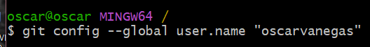Luego creamos un correo es obligatorio
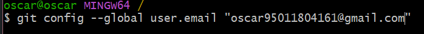vemos la lista de las configuraciones con git config --list
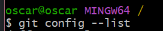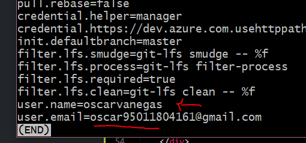
ahora utilizamos este comando para configurar a visual studio code como editor de codigo el --wait significa que cada cambio que hagamos va a esperar que cerremos el editor de codigo para realizar el cambio
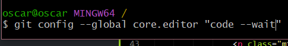Para colocar color en la terminar lo hacemos con el siguiente comando
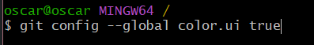Este comando es el cariage return permite hacer un salto de linea (treu solo para windows y imput solo para linux y relacionados)
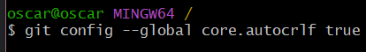Vamos a crear nuestros repositorios primero creando la carpeta Git en documentos donde almacenaremos nuestros repositorios
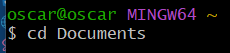Creamos nuestro repositorio con el comando mkdir
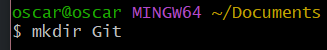vamos donde esta nuestro repositorio con cd y el nombre de la carpeta que creamos
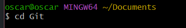inicializamos nuestro repositorio con el comando git init
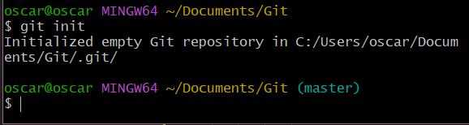